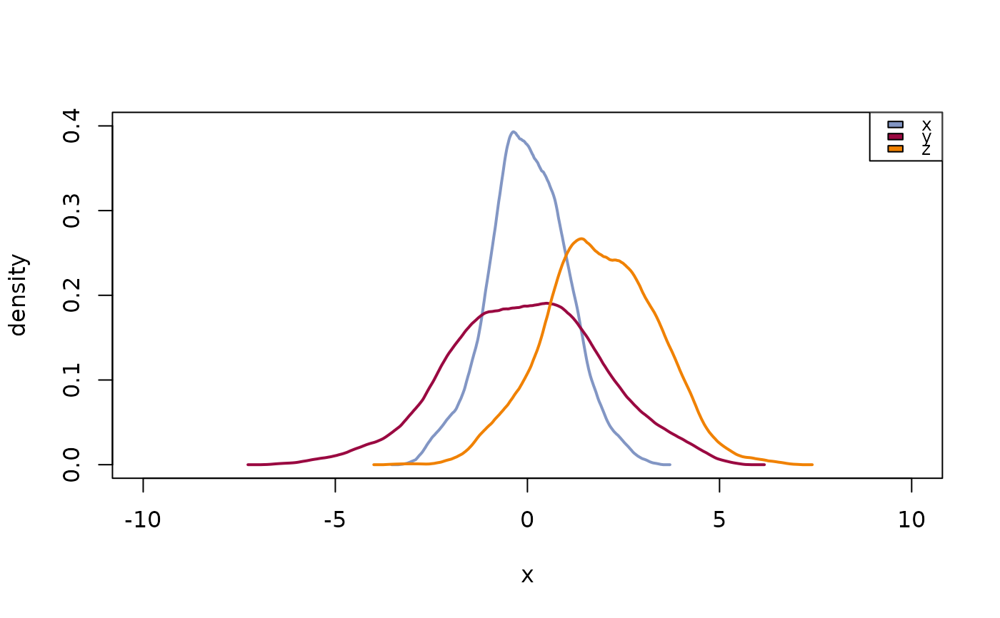
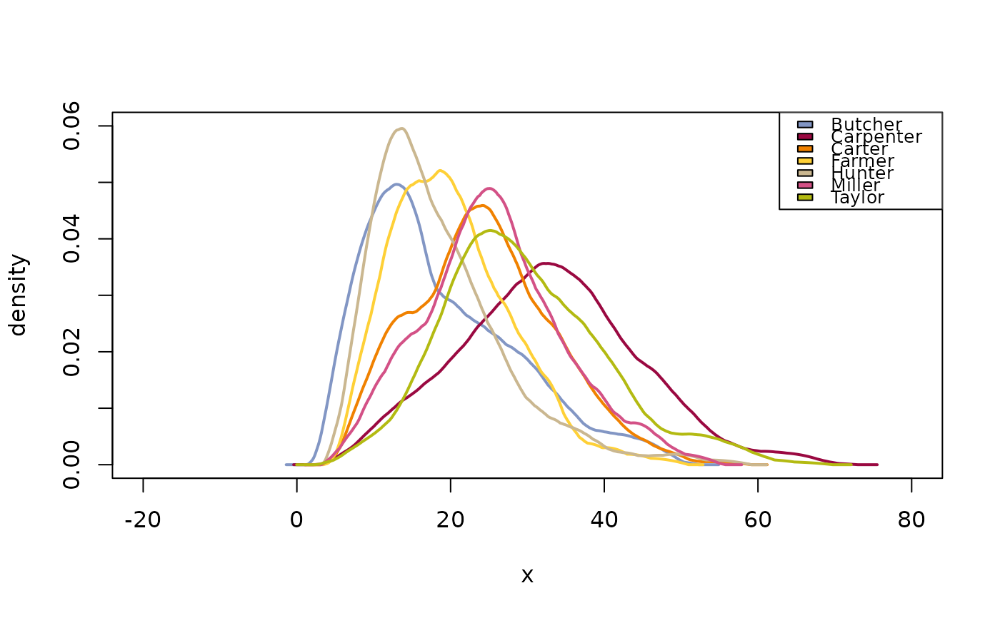
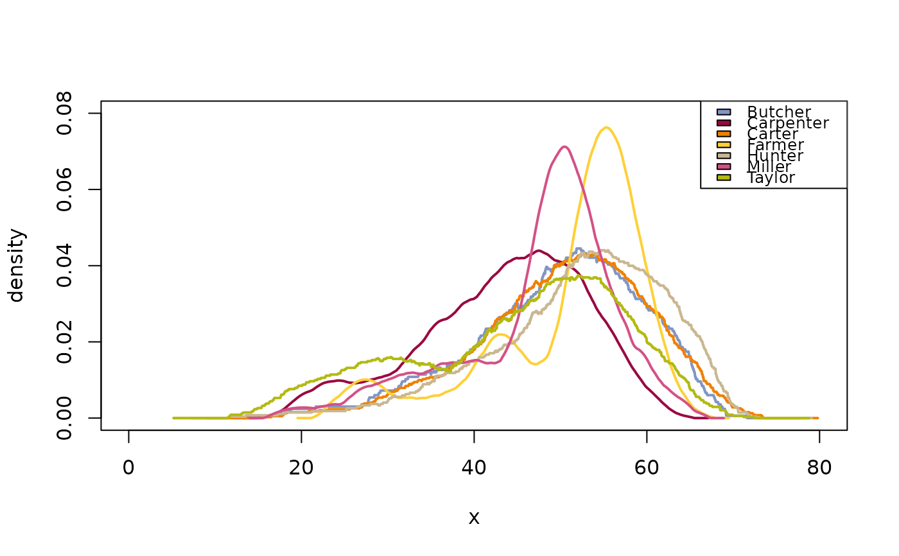
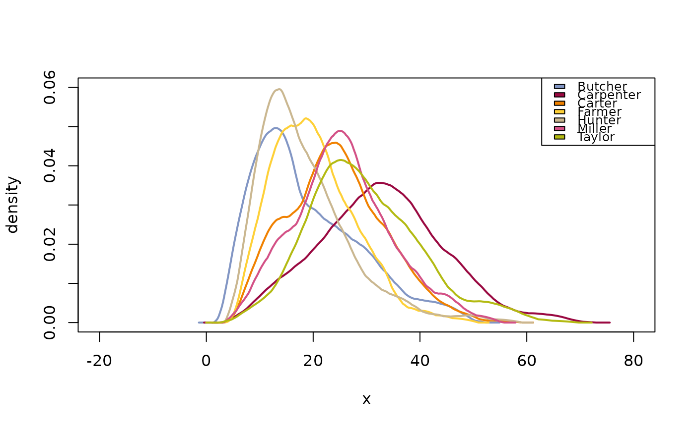
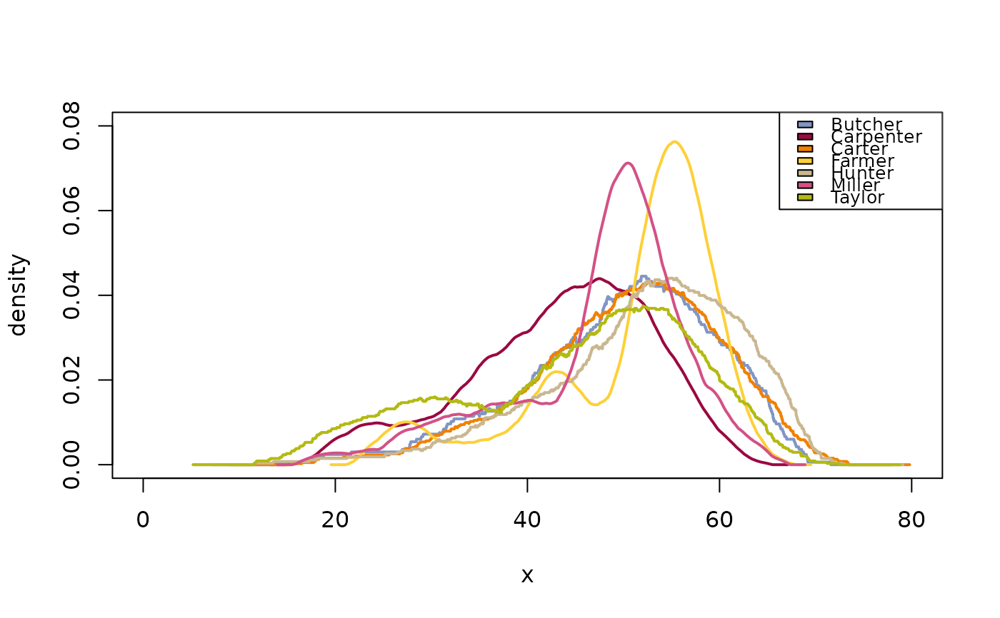

Plot Multiple Density Curves
PlotMultiDens.RdMultiple density curves are plotted on the same plot. The function plots the density curves in the defined colors and linetypes, after having calculated the globally appropriate xlim- and ylim-values. A legend can directly be included.
PlotMultiDens(x, ...)
# Default S3 method
PlotMultiDens(x, xlim = NULL, ylim = NULL, col = Pal(), lty = "solid",
lwd = 2, fill = NA, xlab = "x", ylab = "density", args.dens = NULL,
args.legend = NULL, na.rm = FALSE, flipxy = FALSE, ...)
# S3 method for class 'formula'
PlotMultiDens(formula, data, subset, na.action, ...)Arguments
- x
a list of vectors whose densities are to be plotted. Use
splitto separate a vector by groups. (See examples)- xlim, ylim
xlim, ylim of the plot.
- col
colors of the lines, defaults to
Pal(), returning the default palette.- lty
line type of the lines.
- lwd
line widths for the lines.
- fill
colors for fill the area under the density curve. If set to
NA(default) there will be no color.- xlab, ylab
a title for the x, resp. y axis. Defaults to
"x"and"density".- args.dens
list of additional arguments to be passed to the
densityfunction.
If set toNULLthe defaults will be used. Those aren = 4096(2^12) andkernel = "epanechnikov".- args.legend
list of additional arguments to be passed to the
legendfunction. Useargs.legend = NAif no legend should be added.- na.rm
should
NAs be omitted? Defaults toFALSE.- flipxy
logical, should x- and y-axis be flipped? Defaults to
FALSE.- formula
a formula of the form
lhs ~ rhswherelhsgives the data values and rhs the corresponding groups.- data
an optional matrix or data frame (or similar: see
model.frame) containing the variables in the formulaformula. By default the variables are taken fromenvironment(formula).- subset
an optional vector specifying a subset of observations to be used.
- na.action
a function which indicates what should happen when the data contain NAs. Defaults to
getOption("na.action").- ...
the dots are passed to
plot(...).
Details
All style arguments, density arguments and data list elements will be recycled if necessary.
The argument flipxy leads to exchanged x- and y-values. This option can be used to plot density curves with a vertical orientation for displaying marginal densities.
Value
data.frame with 3 columns, containing the bw, n and kernel parameters used for the list elements.
The number of rows correspond to the length of the list x.
Note
Consider using:
library(lattice)
densityplot( ~ delivery_min | driver, data=d.pizza)as alternative when not all curves should be plotted in the same plot.
See also
Examples
x <- rnorm(1000,0,1)
y <- rnorm(1000,0,2)
z <- rnorm(1000,2,1.5)
# the input of the following function MUST be a numeric list
PlotMultiDens(list(x=x,y=y,z=z))

# use area fill
PlotMultiDens(list(x=x,y=y,z=z), fill=SetAlpha(c("red","green","blue"), 0.4))
 PlotMultiDens( x=split(d.pizza$delivery_min, d.pizza$driver), na.rm=TRUE
, main="delivery time ~ driver", xlab="delivery time [min]", ylab="density"
, lwd=1:7, lty=1:7
, panel.first=grid())
PlotMultiDens( x=split(d.pizza$delivery_min, d.pizza$driver), na.rm=TRUE
, main="delivery time ~ driver", xlab="delivery time [min]", ylab="density"
, lwd=1:7, lty=1:7
, panel.first=grid())
 # this example demonstrates the definition of different line types and -colors
# an is NOT thought as recommendation for good plotting practice... :-)
# the formula interface
PlotMultiDens(delivery_min ~ driver, data=d.pizza)

# recyling of the density parameters
res <- PlotMultiDens(x=split(d.pizza$temperature, d.pizza$driver),
args.dens = list(bw=c(5,2), kernel=c("rect","epanechnikov")), na.rm=TRUE)

res
#> $dens
#> bw n kernel
#> 1 5 96 rect
#> 2 2 253 epanechnikov
#> 3 5 226 rect
#> 4 2 117 epanechnikov
#> 5 5 156 rect
#> 6 2 121 epanechnikov
#> 7 5 197 rect
#>
#> $xlim
#> [1] 0 80
#>
#> $ylim
#> [1] 0.00 0.08
#>
# compare bandwidths
PlotMultiDens(x=split(d.pizza$temperature, d.pizza$driver)[1],
args.dens = list(bw=c(1:5)), na.rm=TRUE,
args.legend=NA, main="Compare bw")
legend(x="topright", legend=gettextf("bw = %s", 1:5), fill=rainbow(5))
# this example demonstrates the definition of different line types and -colors
# an is NOT thought as recommendation for good plotting practice... :-)
# the formula interface
PlotMultiDens(delivery_min ~ driver, data=d.pizza)

# recyling of the density parameters
res <- PlotMultiDens(x=split(d.pizza$temperature, d.pizza$driver),
args.dens = list(bw=c(5,2), kernel=c("rect","epanechnikov")), na.rm=TRUE)

res
#> $dens
#> bw n kernel
#> 1 5 96 rect
#> 2 2 253 epanechnikov
#> 3 5 226 rect
#> 4 2 117 epanechnikov
#> 5 5 156 rect
#> 6 2 121 epanechnikov
#> 7 5 197 rect
#>
#> $xlim
#> [1] 0 80
#>
#> $ylim
#> [1] 0.00 0.08
#>
# compare bandwidths
PlotMultiDens(x=split(d.pizza$temperature, d.pizza$driver)[1],
args.dens = list(bw=c(1:5)), na.rm=TRUE,
args.legend=NA, main="Compare bw")
legend(x="topright", legend=gettextf("bw = %s", 1:5), fill=rainbow(5))